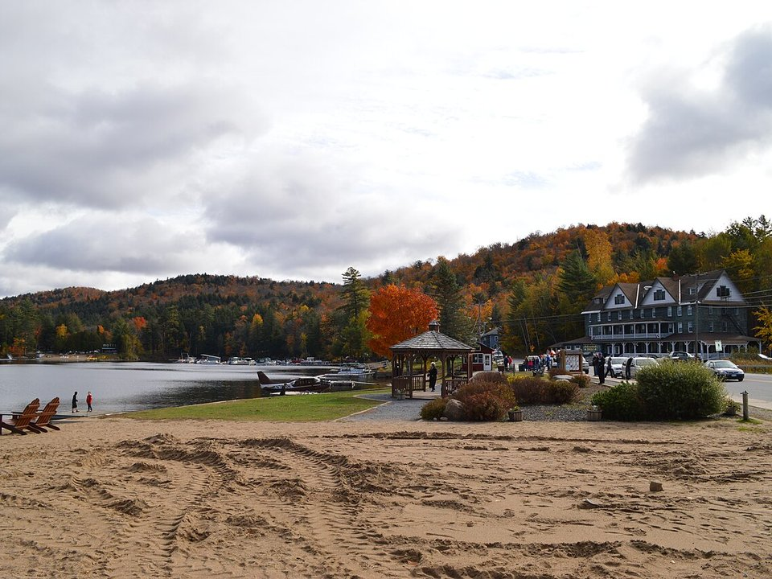

In town · Since the 1850s
The Adirondack Hotel
Twenty rooms and lake verandas across from the town beach and seaplane docks.
Official details for The Adirondack HotelSplash down in the middle of the Adirondacks.
Long Lake is a small town strung along a long, narrow lake in the heart of the Adirondack Park, and floatplanes have worked off its docks for decades. Land on the lake or at Adirondack Regional near Saranac Lake, stay at the 1850s Adirondack Hotel across from the town beach, spend a day at the Adirondack Experience museum on Blue Mountain Lake, and watch the light change on the Seward Range.

We’re flying ourselves there in a small airplane.
Where we’re staying Dinner Things to do The plan
Your pilot handles the flight planning and weather; this page is for the fun part. Pilot view
Time illustration: direct distance at 150 KTAS plus 15 minutes for departure and arrival, matching the discovery page. Use ForeFlight for your actual flight plan.
Check the weekend weather at both ends → Flight category, your minimums and the crosswind on the best runway.
More in Aviation & getting around below. Crew cars change often: call the FBO before you go. How to have a rental car waiting at the FBO · Know something we missed? Tell us.
SLK, Adirondack Regional, is a non-towered field near Saranac Lake with a 6,573-foot runway, about 40 minutes’ drive from Long Lake. Floatplanes and amphibians can land on Long Lake itself at NY9 (Helms) or K03 (Sagamore).
Adirondack Regional Airport, Saranac Lake, NY
Mountain airport: check density altitude and terrain. Confirm fuel, fees and a rental car before you go. No live fuel price is shown.
Adirondack weather: valley fog on summer mornings, fast-building afternoon storms over the High Peaks, mountain turbulence on windy days, and ice on the lakes from about December to April. About 680 nm from Myrtle Beach: plan a fuel stop and three nights.
Long Lake, NY · manager 518-624-3931
Water lanes: NE/SW, 15,000 × 1,500 ft. Long Lake Sagamore (K03), 1/4 mile south of the bridge on the east shore, also lists a 15,000-foot NE/SW lane; manager 518-624-5520.
The Route 30 bridge crosses the lake about 500 feet west of the Helms base. Do not taxi under it at high water; at low water, stay to the west (high) side. Water levels vary by up to 10 feet. Power lines at the base and along the road and bridge. (FAA chart supplement remarks.)
Helms lists 100LL. One lane lies north of the bridge and one south.
Water landing rules, conditions and docking change; call the base and check the chart supplement before you go.
Rates and availability need travel dates. Summer weekends and foliage fill early.
Twenty rooms and lake verandas across from the town beach and seaplane docks.
Official details for The Adirondack HotelA historic lakeside resort of lodges and cabins, open June to mid-October.
Official details for The HedgesA Relais & Châteaux Great Camp on Upper Saranac Lake.
Official details for The PointA restored 1927 hotel downtown, near SLK.
Official details for Hotel SaranacPrices and availability for your dates, through our partner Stay22. This is an affiliate link: we may earn a commission at no cost to you. The picks above are never paid.
Reserve weekend dinners.
The hotel’s dining room, plus the Lake Street Café and taproom overlooking the lake.
Official details for The Adirondack HotelPlan around the weather.
A large museum of Adirondack life on Blue Mountain Lake, about 20 minutes away.
Adirondack ExperienceThis prototype links to the local visitor site. It does not yet match events to your travel dates.
A town celebration at the beach.
Town of Long Lake for Long Lake Independence DayPeak foliage in the central Adirondacks.
Town of Long Lake for Fall colorBusiest months for floatplanes on the lake.
Check the local calendar when choosing a weekend, and confirm dates and tickets with the organizer.
A sample long weekend on the lake. Plan three nights for the flight. No bookings or availability confirmed.
Land at SLK or NY9 mid-morning.
Lunch on the Adirondack Hotel veranda.
The town beach or a seaplane ride, then back to the airport.
Land at SLK or NY9, subject to weather, your fuel stop and your actual flight plan.
Walk from the dock to the beach and the hotel veranda.
Dinner in the Victorian Room.
The Adirondack Experience.
Paddle Long Lake.
The taproom at the Adirondack Hotel.
Buttermilk Falls.
Allow time at the base or airport.
Mountain storms build by afternoon; leave early.
The Adirondack Experience.
Paddle Long Lake.
Dinner in the Victorian Room.
This guide is part of a multi-stop flying trip. Set your dates and aircraft, then swap stops to make it your own.
These details make the difference between an appealing list and a usable getaway.
The hotel first, then a car from SLK if you land there.
About 680 nm. Plan a fuel stop and three nights.
Mind the Route 30 bridge and the changing water level.
Late June to early October.
Picks and links reviewed by WingAway Weekends. Hours, prices, menus and availability change often, so confirm directly with each place before booking. Spotted something out of date, or have a favorite we missed? Email us at hello@wingawayweekends.com.
WingAway Weekends helps you discover the destination. Use ForeFlight and current official aviation information for route, performance, weather, NOTAMs and preflight decisions. Flight planning and PIC responsibility stay with the pilot.